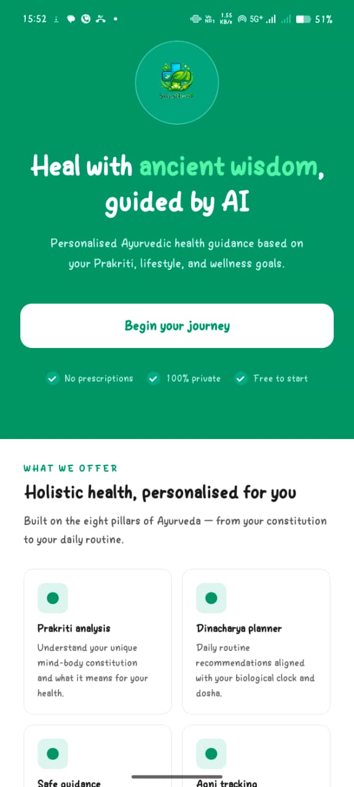
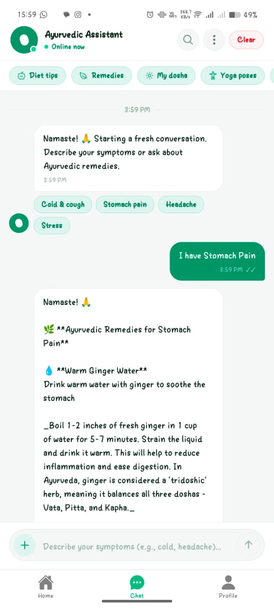
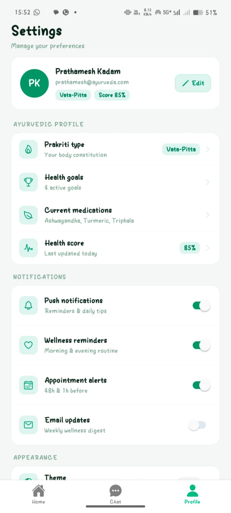

🌿 Swasthya AI
Swasthya AI blends traditional Ayurveda with AI/ML, providing personalized wellness solutions. It analyzes symptoms, dosha imbalances (Vata/Pitta/Kapha), and lifestyle factors using NLP & RAG. Features include multilingual voice, offline caching, remedy suggestions, and Vaidya connect. Achieves 89% dosha detection accuracy and 91.4% speech recognition in regional languages.
Existing health apps lack authentic, personalized Ayurvedic guidance, ignore individual dosha types, language barriers, and offline usage. Swasthya AI bridges that gap via intelligent NLP + AI and verified Ayurvedic knowledge.
- Understand Ayurveda & rural health needs
- Implement AI-powered symptom analysis & dosha detection
- Multilingual voice + offline functionality
- Test for accuracy (89% dosha), safety & usability
- Classical Ayurvedic texts (Charaka Samhita, Sushruta)
- Verified herbal formulation & remedy repository
- Symptom–Dosha labeled dataset (500+ patient profiles)
- Vector embeddings for RAG retrieval (custom knowledge base)
- Symptom collection (text/voice + STT)
- NLP processing + LLM-based dosha classification
- RAG (Retrieval-Augmented Generation) for remedy matching
- Geolocation → Vaidya connect / expert consultation
- Reminders & offline-first caching (85% cache hit)



The architecture captures the mobile app flow through the API gateway into auth, AI, chat, voice.
User data is managed in PostgreSQL, knowledge assets in MongoDB, and fast state in Redis.

Swasthya AI successfully integrates traditional Ayurvedic principles with AI, providing personalized, accessible healthcare via mobile. Achieved 89% dosha detection, RAG-based reliable remedies, multilingual voice, offline mode. All functional modules validated, meeting project objectives. Proven feasibility of combining ancient wisdom & modern AI for digital health.
- Wearable device integration (real-time dosha tracking)
- Expand to 10+ Indian languages, enhanced dialect support
- AI-assisted video consultations with certified Vaidyas
- Deeper integration of classical texts + clinical trials
- Predictive health analytics using longitudinal user data